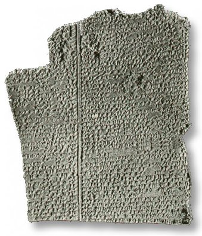

Of all the legends describing the deluge, the Genesis account is the most cohesive and detailed. Yet other accounts passed down outside the Jewish record are not without some merit. Creationists point to dragon legends as a legacy of reported sightings and contact with the last of the dinosaurs. Striking similarities between dragon depictions and the modern concept of the dinosaur point to a period of co-existence. Similarly, the worldwide distribution of ancient flood legends indicate that the disbanding tribes took both their belongings and the Noah story as they left Babel.
The flood described in Genesis is of Biblical proportions, yet despite several things being supernaturally initiated (such as the closing of the door), the testable data adds up. Contrary to skeptic's inflated claims of 30 millions species on board, (only 1.4 million "species" have been logged so far - mostly insects and sea creatures) creationists estimate some 16,000 to 30,000 population founders on board Noah's Ark [2]
The known dimensions are close to the maximum for a wooden vessel, the proportions are ideal according to modern analysis, the ceiling height is sensible, a skylight in the top is logical, even seven days seems like enough time to load the thousands of animals. The flood events unfold logically - a sudden beginning, rising floodwaters, mountains covered, the ark moving about on the waters. The short voyage of 4 to 5 months followed by a long wait as the land dries out and replenishes is also a realistic scenario.
The details of the Ark given in Genesis 6 are tantalizingly brief. What if there are more details hidden away in the parallel accounts, such as the Epic of Gilgamesh? The following study attempts to pick through some of these corrupted stories for any additional information.
 |
The story has problems. Utnapishtam's ark is a cube of 120x120x120 cubits, the bird release is out of order, and only seven days of rain are recorded. However, it does have some merit;
|
(From Frederick Filby "The Flood Reconsidered" [1])
There are other Babylonian flood stories, such as a small fragment discovered at Nippur and undoubtedly of very early date speaks of a flood 'sweeping away all mankind at once' and of someone building a 'great ship . . . with a strong roof in which vessel 'beasts of the field, the birds of heaven and . . . the family' were saved.
A strong roof is an important key to a strong vessel - most boat builders even as late as the 1800's did not adequately account for the stresses of the top deck (weatherdeck). Timber was generous in the keel and sides but often undersized in the weatherdeck, leading to flexure and damage when the vessel is working in a heavy sea. Worse still, it would have been an advantage to have the hull fully utilized as a deep beam which would have lowered the primary bending stresses in the rest of the hull.
The story of the Flood seems to have been so well known that it became one of the popular 'books' in the ancient cuneiform libraries, and fragments of a number of slightly differing texts are known. One broken fragment from Sumeria" speaks of the Flood sweeping over the land and 'tossing the huge boat about'. It tells how 'Ziusudra the king, the Preserver of the seed of mankind . . . opened a window of the huge boat'. Several similar fragments were referred to by Prof. Kramer and in two of these we are told that the Flood 'wiped out everything'. Yet another ancient fragment tells how the god Ea commanded Atra-khasis to 'enter the ship, close its door, bring in grain, live- stock and possessions, as well as wife, kinsfolk and craftsmen'.
Rough seas, the ark as a "huge boat", a window that can be opened.
Berosus was a Babylonian priest of the god Bel, born in the time of Alexander the Great. He had access to records which have long since perished and some of these he translated into Greek probably around 260—250 B.C. His historical work has been lost but fragments of it have been preserved in other writers, including Josephus and Eusebius.4 His account of the Flood as transmitted through Polyhister, Eusebius and Syncellus is as follows:
'After the death of Ardatos, his son Xisuthros reigned eighteen sars (i.e. 18 x 3600 years). In his time a great Flood took place the history of which is thus described. Kronos appeared to him in a vision and told him that on the fifteenth day of Dasios there would be a Flood by which mankind would be destroyed. Kronos commanded Xisuthros to write a history of the beginning, procedure and end of all things and to bury it at Sippar. Then he must build a boat and enter it with his friends and relations, and put on board provisions, together with birds and quadrupeds... He obeyed and built a boat five stadia long and two stadia wide, and when all was ready he embarked his wife and children and friends. After the Flood had come and abated Xisuthros sent out birds from the vessel. These, however, having found neither food nor resting-place came back to the ship. After an interval of some days he sent them out again but they returned with their feet soiled with mud. When he let them go a third time they did not return to the ship. Xisuthros knew, therefore, that land had reappeared, and when he had removed a part of the ship's side he saw that they were grounded on the side of some mountain. With his wife, daughter and the pilot he quitted the ship and having bowed to the earth erected an altar and offered sacrifices. The group thereupon disappeared and those who had remained in the ship landed and called for Xisuthros. He did not appear but a voice from heaven told them to reverence the gods among whom Xisuthros had gone to dwell. They were bidden to return to Babylon and told to recover the writings from Sippar and share them with men. The place in which they then were was Armenia. Hearing this they went to Babylonia. Of the ship, which had there rested, there still remains a portion in the mountains of the Gordyaeans in Armenia, and men scrape off asphalt and use it to ward off evil. Those who came to Babylonia dug up the writings at Sippar and founded many cities and shrines and re-peopled Babylonia.'
A Greek stadia is around 183m, so the boat in this story is an oversized 923m x 369m. Interesting mention of the record keeping of the main character (Xisuthros), and exit by removing part of the ship's side.
Syrian: Deucalion and his family, saved horses, lions, snakes and other creatures that became tame.
The tame animal description is significant, since after the flood God put the fear of man into the animals.
Phoenicians believed Sydyk and his seven sons (making eight persons) were the builders of the first ship.
From a post-flood perspective, Noah's Ark was the first ship.
The floodwaters associated with hot springs- Assyrian and Persian legends - including a traditional record in the Koran of the flood coming from the oven of an old woman.
Several legends refer to hot waters - quite logical considering their subterranean origin.
A Persion legend of Yima being warned of coming flood and to hide in a cave until the danger was over. The "cave" or "var" was square, as long as a horse could run, contained specimens of all plants, animals and birds as well as a thousand human couples, and finally had "a window which could be opened for the light".
Window hatches make sense, considering the severity of the flood and the fact that there were no other survivors. Light being the memorable feature of this window rather than the more subtle effect of ventilation is in agreement with the use of the word tsohar in Genesis, which means noon-light.
In India, Noah is remembered as Satyavrata, who was commanded to take food, pairs of animals and seven holy men and their wives into a vessel. He was given seven days warning, so fortunately the ark was provided. In the Rig-Veda (Satapatha-Brahmana) the hero Manu had to build the vessel himself.
In Vietnam the story becomes a brother and sister rescued from the flood by a great chest which also contained two of every kind of animal.
In Hawaii, the flood destroyed all the wicked except Nu-u and his family. They made a great canoe with a house on it and took plants and animals into it. A rainbow is also given at the end, making critics consider this story a Christian influence, although this is uncertain.
Chinese legends are also difficult to isolate from Christian influence, but some of the oldest legends speak of the Yellow Emperor who was sad because of the wicked ways of men. Boat builders worked day and night to save themselves.
Reference to a shipbuilding workforce.
In Siberia, the Votyaks tell of Noj who built his boat single-handed in three years, while the Ostyaks tell of the hero Pairachta who built it in 30 years. The evil one wishing to destroy the boat told the wives to brew strong drink to make the workers drunk, who subsequently babbled and the boat secret was out.
In Australia, Nurrundere punished his wicked wives and his children with a deluge.
America has scores of flood legends - from Alaska to the southerly limit of South America - Tierra del Fuego - where the story was told of all the earth submerged except one high mountain and only a few people saved. Even the highly civilized Aztecs had legends that were already very old when the Spaniards arrived, perhaps going back to the Toltecs or pre-Toltec aborigines. Ixtlilxochitl, the native historian, says the first world lasted 1716 years before the flood. The Aztecs tell of the prophet Huemac or Quetzalcoatl who taught ethics, warning of the coming destruction, and died at 300. Nata and Nena survived the flood in a ship which they built at the command of the god Tezcatlipoca. The date of the flood was the year Cacalli.
The Bible has 1656 years from Creation to the Flood. Ixtlilxochitl was a relatively recent author who may have been influenced by Christian teaching from the Spanish. [3]
The Greeks also have flood legends, such as Zeus who decided to destroy the human race by floods which drowned all except a few who escaped to the mountains. Deukalion, advised by his father Prometheus took his wife Pyrrha aboard a vessel loaded with provisions. The flood that followed is described by Ovid;
'Sea and land have no distinction. All is sea but a sea without a shore. Here one man seeks a hill-top in his flight; another sits in his curved skiff plying the oars where lately he has ploughed; one sails over his fields of grain or the roof of his buried farm-house and one takes fish caught in the elm trees top . . . The Nereids are amazed to see beneath the waters groves and cities and the haunts of men . . . The wolf swims among the sheep while tawny lions and tigers are borne along by the waves . . . and the wandering bird, after long searching for a place to alight, falls with weary wings into the sea . . . The sea, in unchecked liberty has now buried all the hills, and strange waves beat upon the mountain peaks. Most living things are drowned outright. Those who have escaped the water, slow starvation at last overcomes through lack of food.'
Not necessarily adding specific details, but an interesting narrative. A relatively placid ocean is deadly to people and animals who have no food, but the images of people rowing over their old homes strains the imagination. It could also imply that people on other boats might survive. There is no indication in the Bible that Noah's family were able to view the plight of the the doomed inhabitants of the pre-flood world, and stormy conditions would preclude it.
In Greece, Bacchus, the god of wine, seems plainly a confused recollection of Noah. He was, like Osiris, enclosed in a chest, rescued from the sea, he instructed men in agriculture, was a husbandman, and was represented as sailing in a ship decked with leaves of ivy and vine.
The Romans had many gods including Janus who was the god who looked both ways— back into the past, the Old World, and forward into the future, to a new era. Like Noah he belonged to both. He became not only the god of doors but of the opening of the Year—hence January. Janus, the two-headed god was called the Father of the World and also the Inventor of Ships. Presents given on his festivals include copper coins with the head of Janus on one side and a part of a ship on the other, or in some cases a dove with a branch in its mouth.
The door of the Ark plays a significant role.
In Northern Europe and Iceland the stories are collected mainly in the Eddas, books which in some places enshrine Norse stories from pre-Christian times. No one now knows when they were originally put together but they tell of huge struggles between the gods, the Aesir, and the Fire and Frost Giants. They tell of a flood either by sea or by the blood of a giant and of the escape of Bergelmir and his wife in a ship.49 The Norse god Odin was also the god of the dead and besides having two raven-messengers, Huginn and Munninn, was a so-called 'Raven-god'. The raven long remained as a sign on Viking ships.
A sea based flood is the only possibility for a world wide flood, and in stark contrast to the flooded river scenarios proposed by liberal critics and Bible skeptics.
Remains of a flood story are found in Lithuania, Finland and Lapland and Britain before the coming of Christianity. In Wales it was the overflowing of Llyn Llion from which only Dwyvan and Dwyvach escaped, whilst in Ireland Bith and his family alone escaped the deluge and came at last in a ship to Inisfail.
Josephus Antiquities I. 3.2 "Now the Ark had firm walls and a roof, and was braced with cross beams"
Description of a strong structure. A larger vessel requires an increasingly stout structure due to the square-cube law. Noah's Ark is hovering around the limit for a wooden ship built to survive storm conditions, so it would need to be built with structural strength as a top priority.
There are many extra-biblical sources for Noah's Ark, the sum of which is considered a weight of evidence for a global flood with only one family to tell the story. Logically then, there should be something useful in this extra data. This line of thinking is evident in the way modern eyewitness accounts appear to have influenced the creationist ideas on hull design. (Hagopian hull form in the Korean safety study). Another example is the use dragon legends as supporting evidence that humans and dinosaurs once lived at the same time.
Likewise, there is every chance that some information about Noah's Ark has been passed down without inclusion in the Genesis record. Unfortunately the correct original data is not readily determined. While every story outside of Genesis shows some level of corruption, not every detail is necessarily unsound. A particular detail might be worth considering if it passes a few simple tests;
It does not contradict the Biblical account.
The feature is plausible within the general outline of the Genesis Flood.
It comes from the more accurate, more ancient versions.
The detail is repeated in various legends
Windows that can be opened. (Persion legend of Yima, Sumerian tale of Ziusudra). Covers fitted over openings is standard procedure for storm preparation. ("batten down the covers"). In calm conditions the window should be fully opened.
A strong roof. (Nippur fragment) Structurally optimum design for primary wave bending loads. Spinoffs for water (green water) loading in extreme seas and resistance to damage from volcanic debris, outsized hail etc.
A cooked pitch mixed with oil. (Gilgamesh) Pitch recipes based on tree resins rather than bitumous tar (fossil fuel based) is a well known part of the wooden ship industry. The heating of the pitch is also a realistic clue not given in the bible.
An arrangement of six bulkheads each containing nine rooms per deck. (Gilgamesh) A central corridor under a skylight appears the most logical method arrangement for lighting and ventilation. If the transverse walls were considered as room dividers then each hold has three rooms per deck level, or nine rooms altogether. Considering the gross dimensional errors of the Gilgamesh Epic, these 7's and 9's cannot be taken too seriously, but multiples of threes and sevens certainly have a Biblical precedent.
There are a number of references to live plants on board. (Greek god of wine Bacchus, Persion legend of Yima) This is not given explicitly in the Bible but there are logical reasons to have live plant food.
Did Noah exit through the door ? (loosely linked to Janus the Roman god of doors), or did he cut a hole through the side? (Greek hero Xisuthros who exits by removing part of the ship's side - an unusual and specific reference given in a higher quality version of the flood story. )
Some legends have the Noah figure build the ship single-handed, (Indian hero Manu, Siberian character Noj took three years, whereas Pairachta took 30 years). The Chinese story implies a construction team working day and night.
Violent wave conditions. (Sumerian tale of Ziusudra) "Tossing the huge boat about"
There are also Jewish sources and Apocryphal writings that refer to Noah's Ark.
1. Frederick A. Filby "The Flood Reconsidered - A review of the evidences of geology, archeology, ancient literature and the Bible". Zondervan 1970. Filby refers to the work of Whitcomb and Morris (The Genesis Flood) but advocates a local flood of international proportions in a attempt to harmonize long age ideas with the inescapable Biblical statements of global judgment. He claims the flood legends are a distorted recollection of the Biblical account and suggests violent tectonic movements and sea level rises as a mechanism, yet treats the flood as a minor event in the geological record that would be expected to appear as a few feet of "sterile mud". One factor that seems to have influenced his position is the evidence of repeated flooding, something easily explained in the dynamic nature of the flood - it most likely did go up and down in surges. The book is good compilation of evidence of the historicity of the flood. Return to text
2. John Woodmorappe "Noah's Ark - A Feasibility Study" ICR 1996. John determines approx 16,000 animals mostly representatives of the genus of today's species. Return to text
3. Doubts on the reliability of Ixtlilxochitl as a primary source for pre-Spanish traditions in the Americas. http://frontpage2000.nmia.com/~nahualli/LDStopics/DigQ/17Primary.htm Return to text